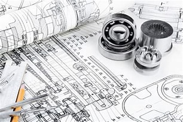
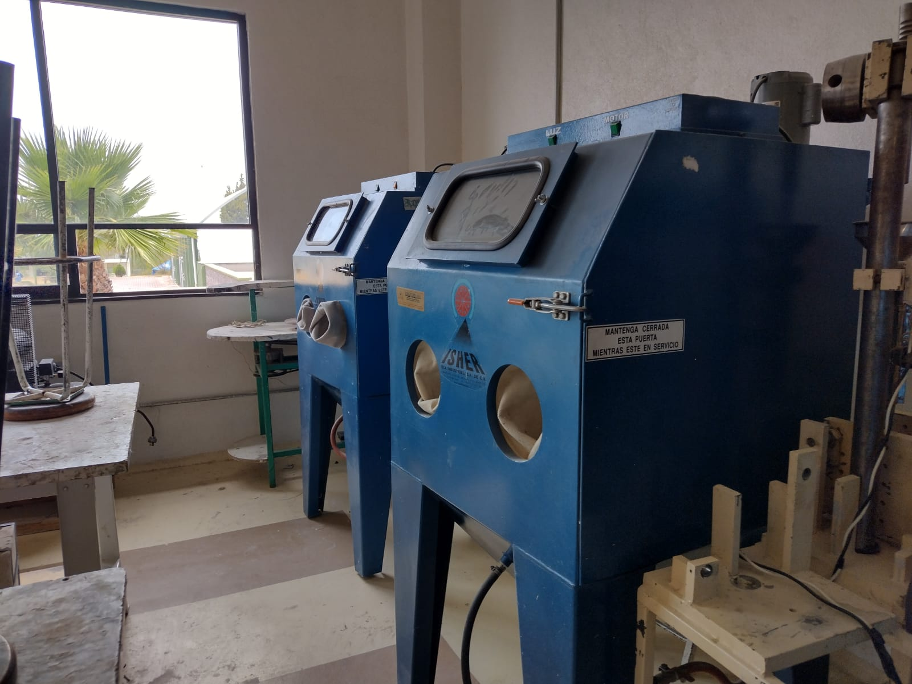
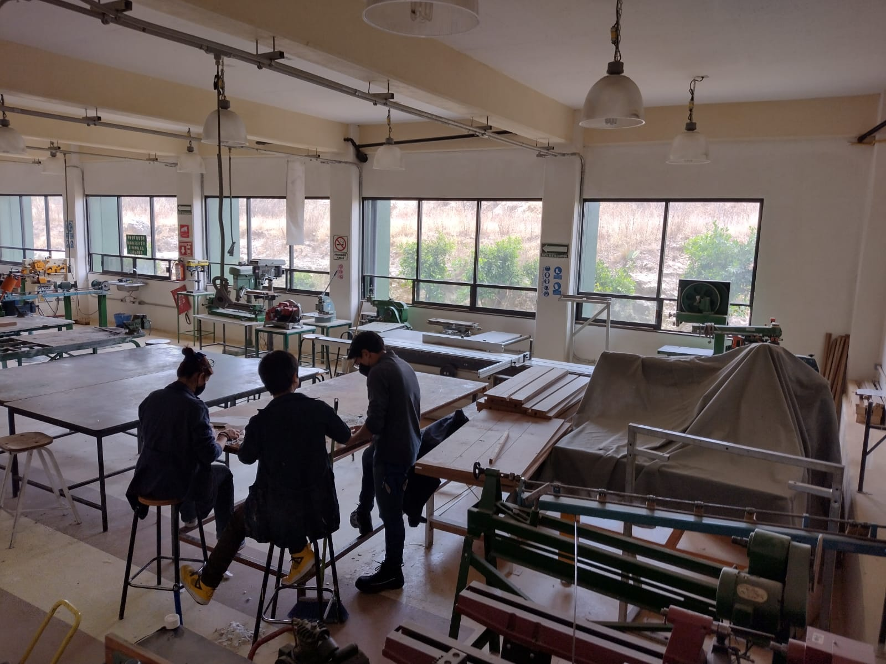
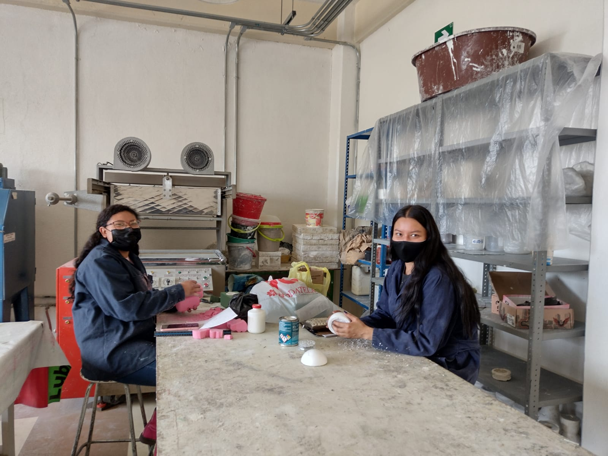
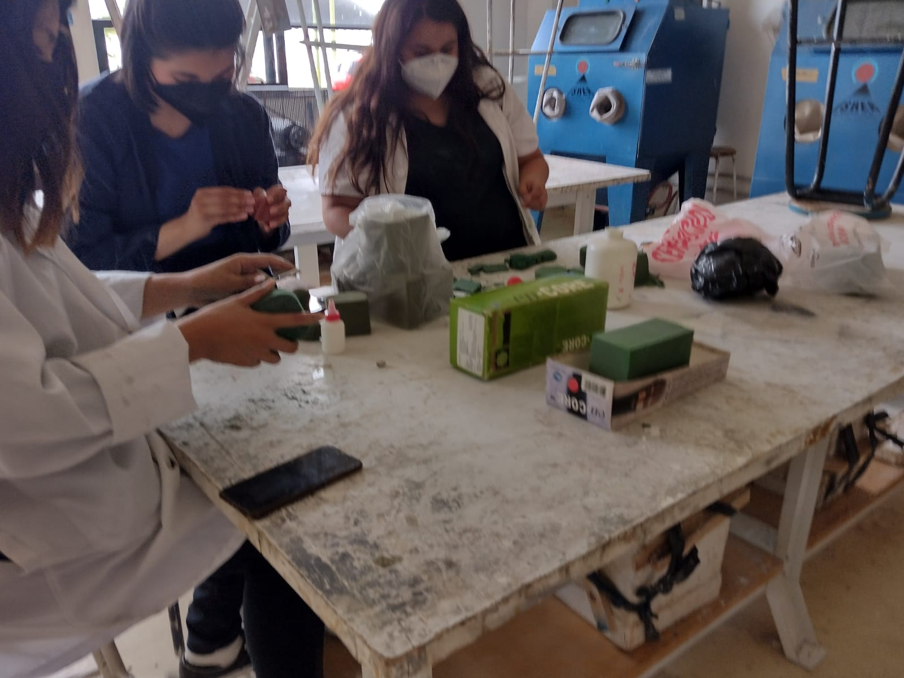
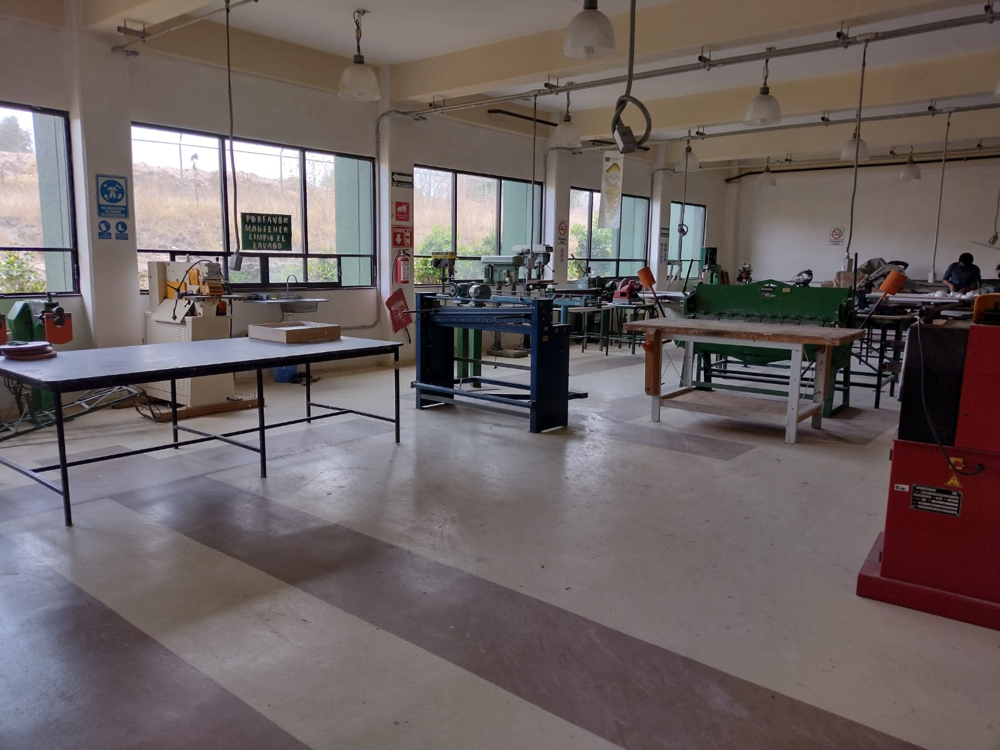
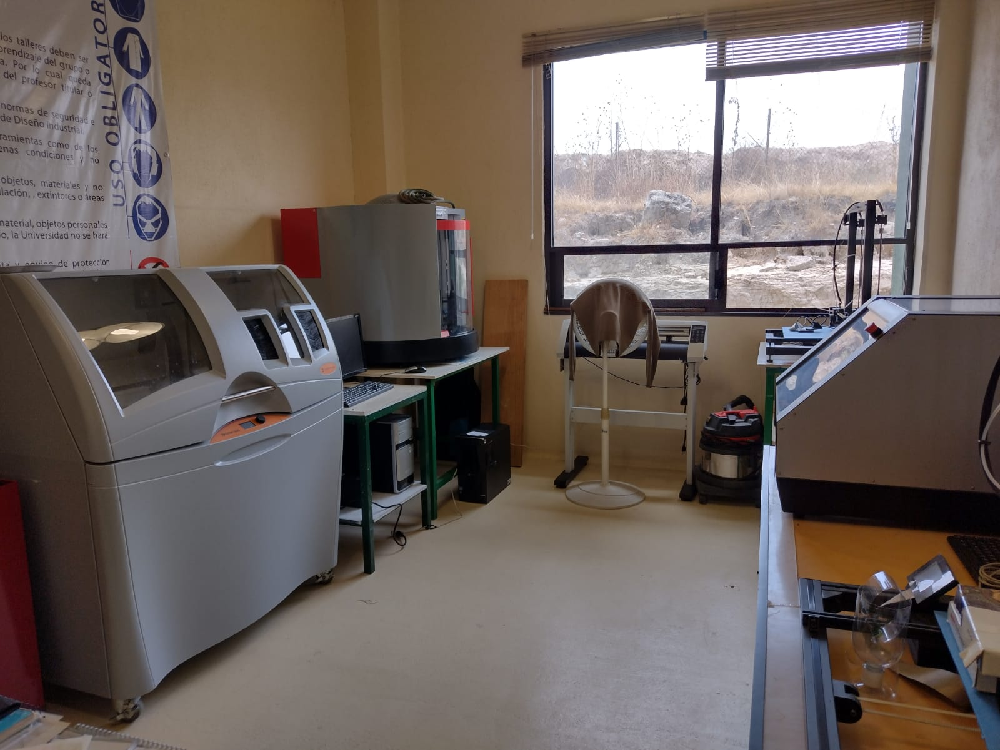
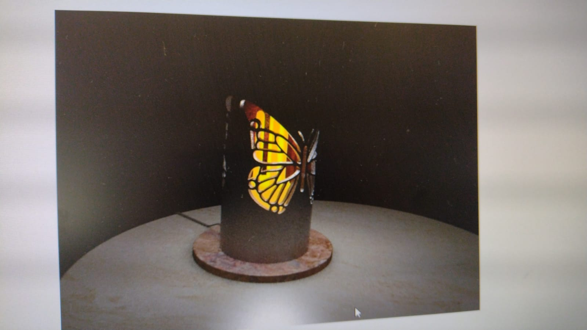
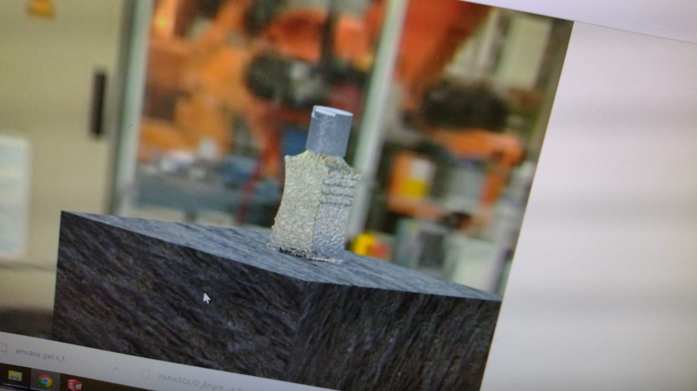

Habilidades obtenidas

1Manego de seramicas
Preparacion y conocimiento de como combinar diferentes polvos a la ceramica pre-fabricada para poder utilizarse
2Uso de los hornos
Capasitacion para el uso de hornos para el endurecimiento de la ceramica
3Creacion de dibersas figuras
Creacion de dibersos objetos como seniceros, mazetas, platos, etc
Imagenes relacionadas con el laboratorio







